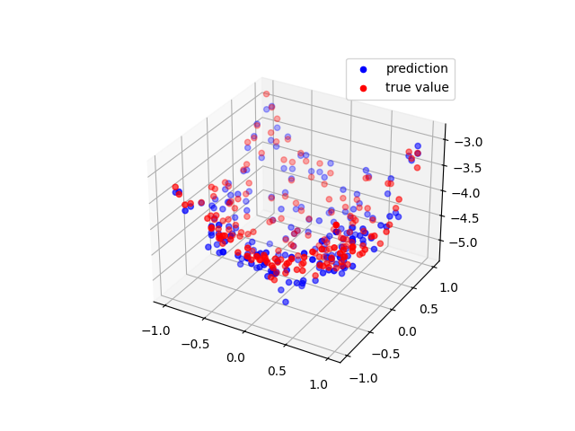

Note
Go to the end to download the full example code.
Multidimensional Gaussian Process Regression (GPR)
This script demonstrates the use of a Gaussian Process Regressor (GPR) with a Radial Basis Function (RBF) kernel in a multidimensional setting. The example involves training a GPR model on 2D input data and predicting the outputs on a test set.
Epoch: 1 - Log marginal likelihood: -1769401.875 - Parameters: {'rbf_sigma_1': 0.999, 'rbf_corr_len_1_1': 0.999, 'rbf_corr_len_1_2': 0.999}
Epoch: 2 - Log marginal likelihood: -1801968.625 - Parameters: {'rbf_sigma_1': 0.999, 'rbf_corr_len_1_1': 0.998, 'rbf_corr_len_1_2': 0.998}
Epoch: 3 - Log marginal likelihood: -1820331.25 - Parameters: {'rbf_sigma_1': 0.998, 'rbf_corr_len_1_1': 0.997, 'rbf_corr_len_1_2': 0.997}
Epoch: 4 - Log marginal likelihood: -1828268.125 - Parameters: {'rbf_sigma_1': 0.998, 'rbf_corr_len_1_1': 0.996, 'rbf_corr_len_1_2': 0.996}
Epoch: 5 - Log marginal likelihood: -1771878.75 - Parameters: {'rbf_sigma_1': 0.997, 'rbf_corr_len_1_1': 0.995, 'rbf_corr_len_1_2': 0.995}
Epoch: 6 - Log marginal likelihood: -1817411.0 - Parameters: {'rbf_sigma_1': 0.997, 'rbf_corr_len_1_1': 0.994, 'rbf_corr_len_1_2': 0.995}
Epoch: 7 - Log marginal likelihood: -1751505.25 - Parameters: {'rbf_sigma_1': 0.997, 'rbf_corr_len_1_1': 0.993, 'rbf_corr_len_1_2': 0.994}
Epoch: 8 - Log marginal likelihood: -1787765.125 - Parameters: {'rbf_sigma_1': 0.997, 'rbf_corr_len_1_1': 0.992, 'rbf_corr_len_1_2': 0.993}
Epoch: 9 - Log marginal likelihood: -1815152.75 - Parameters: {'rbf_sigma_1': 0.997, 'rbf_corr_len_1_1': 0.992, 'rbf_corr_len_1_2': 0.992}
Epoch: 10 - Log marginal likelihood: -1800227.375 - Parameters: {'rbf_sigma_1': 0.997, 'rbf_corr_len_1_1': 0.991, 'rbf_corr_len_1_2': 0.991}
import torch
import matplotlib.pyplot as plt
from DLL.MachineLearning.SupervisedLearning.GaussianProcesses import GaussianProcessRegressor
from DLL.MachineLearning.SupervisedLearning.Kernels import RBF
from DLL.Data.Preprocessing import data_split, StandardScaler
n = 30
X, Y = torch.meshgrid(torch.linspace(-1, 1, n, dtype=torch.float32), torch.linspace(-1, 1, n, dtype=torch.float32), indexing="xy")
x = torch.stack((X.flatten(), Y.flatten()), dim=1)
y = X.flatten() ** 2 + Y.flatten() ** 2 + 0.1 * torch.randn(size=Y.flatten().size()) - 5
transformer = StandardScaler()
y = transformer.fit_transform(y)
x_train, y_train, _, _, x_test, y_test = data_split(x, y, train_split=0.8, validation_split=0.0)
model = GaussianProcessRegressor(RBF(correlation_length=torch.Tensor([1, 1])))
model.fit(x_train, y_train)
model.train_kernel(epochs=10, verbose=True)
mean, covariance = model.predict(x_test)
z = transformer.inverse_transform(mean)
fig = plt.figure()
ax = fig.add_subplot(111, projection='3d')
surf = ax.scatter(x_test[:, 0], x_test[:, 1], z, color="blue", label="prediction")
surf = ax.scatter(x_test[:, 0], x_test[:, 1], transformer.inverse_transform(y_test), color="red", label="true value")
ax.legend()
plt.show()
Total running time of the script: (0 minutes 6.310 seconds)